Texto extraído da edição fornecida, sem atualização normativa. Consulte a página original para conferir tabelas, formulários e instruções ilustradas. A numeração dos links corresponde à página do arquivo PDF.
Esta página contém conteúdo gráfico. Consulte a reprodução original abaixo.
Ver página original — tabelas, imagens e diagramas
Legislação básica
PDF · p. 2Esta página contém conteúdo gráfico. Consulte a reprodução original abaixo.
Ver página original — tabelas, imagens e diagramas
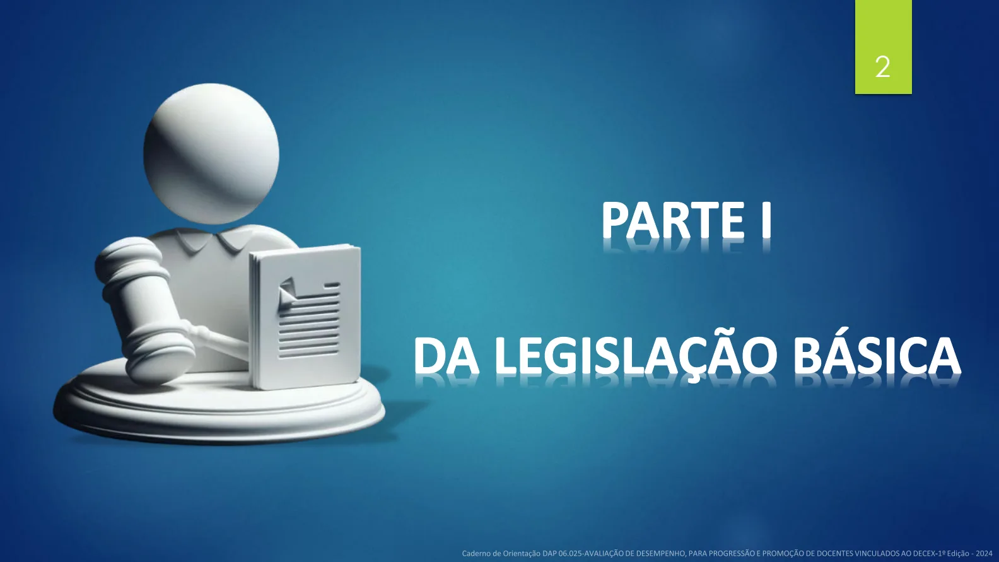
Legislação básica
PDF · p. 3É dever do servidor público, da Organização Militar (OM) e da Região
Militar (RM) ler e acompanhar a atualização da legislação que se refere
aos assuntos tratados neste Caderno de Orientação.
Lei nº 12.772, de
28 de dezembro de
2012
Lei nº 13.325, de
29 de julho de
2016
Portaria no
2.093/MD, de 12
de julho de 2013
Portaria no
1.114/Cmt Ex, de
31 de agosto de
2016 (IG)
Portaria no
214/DECEx, de 20
de dezembro de
2016 e suas
alterações
Portaria nº 122-
DECEx, de 4 JUN
19 (IR).
Ver página original — tabelas, imagens e diagramas
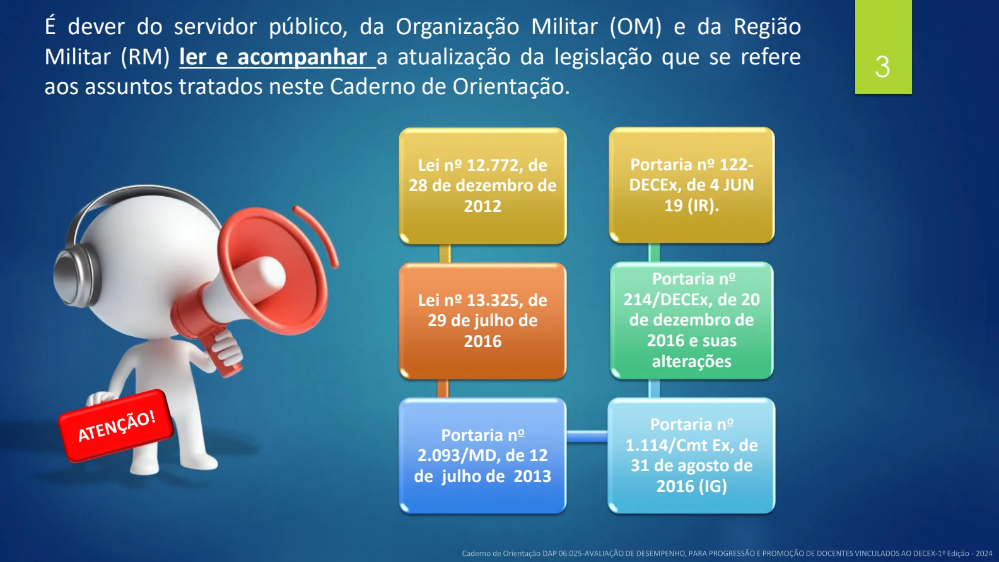
Estrutura da carreira
PDF · p. 4Esta página contém conteúdo gráfico. Consulte a reprodução original abaixo.
Ver página original — tabelas, imagens e diagramas
Estrutura da carreira
PDF · p. 5CARGO CLASSE DENOMINAÇÃO NÍVEL
Professor de
Magistério
Superior
E TITULAR ÚNICO
D Associado
4
3
2
1
C Adjunto
4
3
2
1
B Assistente 2
1
A
Adjunto-A – se Doutor 2Assistente-A – se Mestre
Auxiliar – se Graduado ou
Especialista 1
Professor Titular-
Livre do Magistério
Superior
- - Único
1. PROFESSOR DE MAGISTÉRIO SUPERIOR:
Tabela 1 – Carreira de Magistério Superior
Ver página original — tabelas, imagens e diagramas
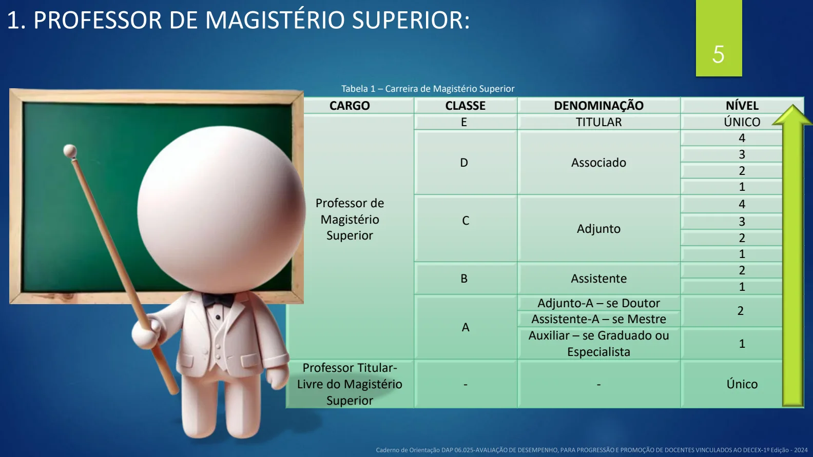
Estrutura da carreira
PDF · p. 6CARGO CLASSE NÍVEL
Professor do Ensino Básico, Técnico
e Tecnológico
Titular 1
D IV
4
3
2
1
D III
4
3
2
1
D II 2
1
D I 2
1
Professor Titular-Livre do Ensino
Básico, Técnico e Tecnológico - Único
2. PROFESSOR DO ENSINO BÁSICO, TÉCNICO E TECNOLÓGICO
E PROFESSOR TITULAR-LIVRE DO ENSINO BÁSICO, TÉCNICO E
TECNOLÓGICO:
Tabela 2 – Carreira de Magistério do Ensino Básico, Técnico e Tecnológico
Ver página original — tabelas, imagens e diagramas
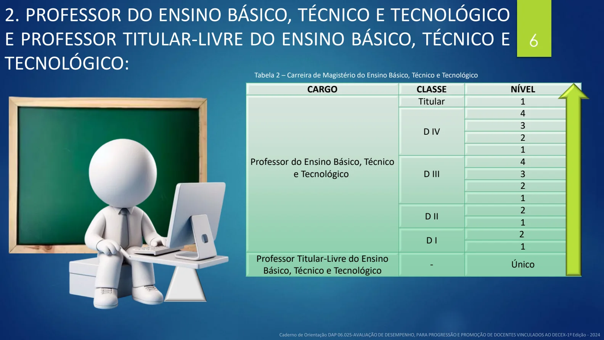
Esta página contém conteúdo gráfico. Consulte a reprodução original abaixo.
Ver página original — tabelas, imagens e diagramas
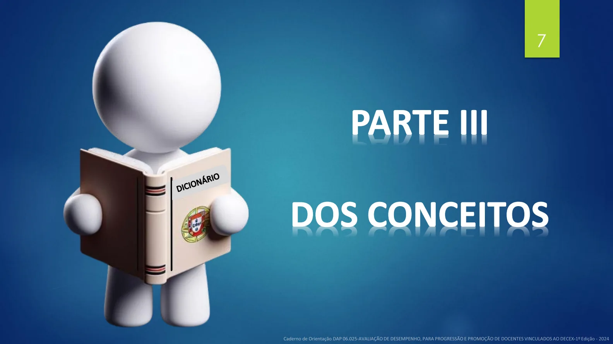
PROMOÇÃO: passagem do servidor do último nível de uma classe para o
nível inicial da classe imediatamente superior.
NÍVEL
C
L
A
S
S
E
PROGRESSÃO FUNCIONAL: passagem do servidor de um nível para outro
imediatamente superior dentro de uma mesma classe.
ACELERAÇÃO DE PROMOÇÃO: é a passagem do
docente para outra classe, em função da apresentação
de titulação acadêmica.
Desenvolvimento na carreira: consiste na mudança de nível e/ou classe em que se encontra o docente para
posição superior. Quando a mudança ocorrer dentro da mesma classe, denominar-se-á progressão funcional
e quando implicar mudança de classe, promoção.
ÓRGÃOS GESTORES DAS LINHAS DE ENSINO MILITAR: são órgãos de direção
setorial (ODS) responsáveis pelas linhas de ensino militar, definidos no art. 10
do Decreto nº 3.182, de 23 de setembro 1999 (DECEx e DCT)¹.
¹ Departamento de Educação e Cultura do Exército(DECEx)
Departamento de Ciência e Tecnologia (DCT)
Ver página original — tabelas, imagens e diagramas
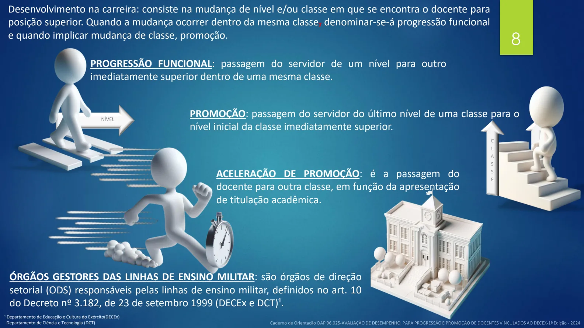
AVALIAÇÃO DE DESEMPENHO: é um processo contínuo de observação,
análise e orientação oportunas, tendo em vista o desenvolvimento na
carreira, adequação ao nível da docência, bem como melhoria e segurança
nas relações institucionais e pessoais.
FICHA DE AVALIAÇÃO DE DESEMPENHO DE DOCENTE (FADD): é o instrumento de aferição específico
por docente, elaborado pelos órgãos gestores das linhas de ensino militar, no âmbito do Comando do
Exército.
INTERSTÍCIO: é o tempo mínimo, contínuo ou intercalado, de permanência em cada
nível.
Ver página original — tabelas, imagens e diagramas
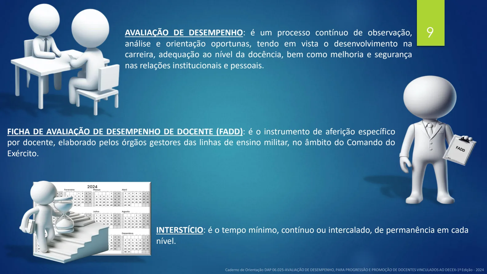
Critérios de avaliação, progressão e promoção
PDF · p. 10PARTE III
DOS CRITÉRIOS DE
AVALIAÇÃO DE
DESEMPENHO, PROGRESSÃO E
PROMOÇÃO
Ver página original — tabelas, imagens e diagramas
Critérios de avaliação, progressão e promoção
PDF · p. 11O interstício para a progressão ou promoção é de 24 (vinte e quatro) meses.
O interstício será computado após o ingresso no cargo efetivo ou da última
progressão/promoção, deduzidos os afastamentos que não forem legalmente
considerados de efetivo exercício (inclusive falta não justificada).
Haverá SUSPENSÃO do interstício nos casos em que o servidor se afastar sem remuneração, sendo
retomado o cômputo a partir do retorno à atividade.
1. Do interstício :
Ver página original — tabelas, imagens e diagramas
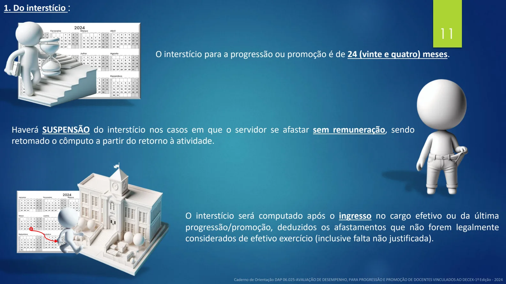
Critérios de avaliação, progressão e promoção
PDF · p. 12A avaliação individual do professor para fins de progressão funcional realiza-se por intermédio da
Ficha de Avaliação do Desempenho de Docente (FADD) - (Anexo A deste Caderno).
2. Da Avaliação de Desempenho:
O período de avaliação é de 1º de janeiro a 31 de dezembro, porém, a avaliação de
desempenho ocorrerá ao final de cada ano letivo.
O prazo de conclusão do preenchimento da FADD, para fins da progressão funcional, encerra-
se no Estabelecimento de Ensino ATÉ 30 de novembro de cada ano.
Ver página original — tabelas, imagens e diagramas
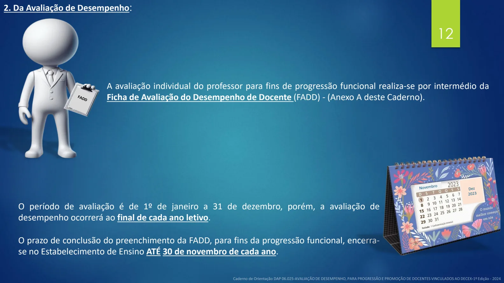
Critérios de avaliação, progressão e promoção
PDF · p. 132. Da Avaliação de Desempenho:
À época da avaliação, a DAP ENCAMINHARÁ a Planilha de Controle de docentes, que deverá
ser preenchida (atualização de nome, afastamentos, desligamentos e remoções) e devolvida à
DAP ,juntamente com os demais documentos solicitados.
Os dados impressos deverão ser checados e, se for o caso, corrigidos, e os docentes omitidos,
acrescentados, com destaques.
A avaliação de desempenho será realizada pela chefia imediata, considerando,
também, os resultados obtidos por comissão especificamente designada para essa
finalidade, e será convalidada pelo diretor de ensino de cada estabelecimento de
ensino.
O Diretor de Ensino designará em Boletim Interno a Comissão Avaliadora de
Desempenho, que poderá ser indicada pela Comissão Permanente do Magistério -
COPEMA.
RESULTADO
Ver página original — tabelas, imagens e diagramas
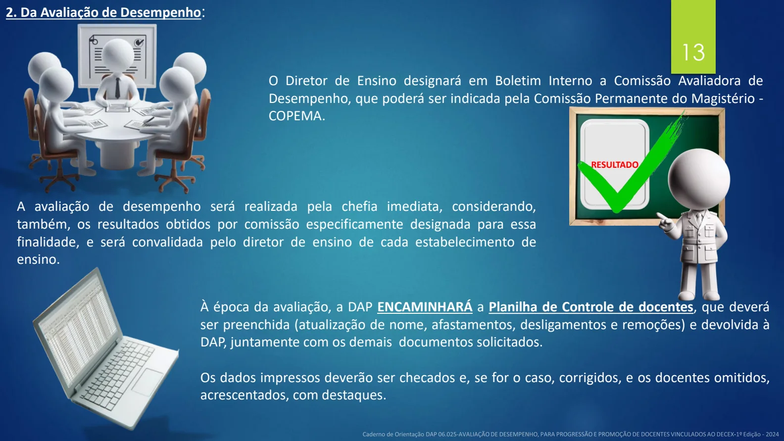
Critérios de avaliação, progressão e promoção
PDF · p. 142. Da Avaliação de Desempenho (cont.):
A qualquer época permite-se a aplicação da FADD, inclusive aos docentes
sem condições de progressão funcional, em eventuais situações de nova
quantificação de mérito e de regressão “ex officio” do regime de trabalho.
A aprovação em avaliação de desempenho dar-se-á com a obtenção de no mínimo de 60% do total
previsto de pontos.
Nos casos de nomeação, a primeira avaliação ocorrerá no
ano de ingresso desde que este tenha ocorrido no primeiro
semestre do respectivo ano letivo, caso em que o período
de observação será superior a 6 meses.
AVALIAÇÃO DE
DESEMPENHO
60
70
80
90
50
40
0
10
20
30
100
Ver página original — tabelas, imagens e diagramas
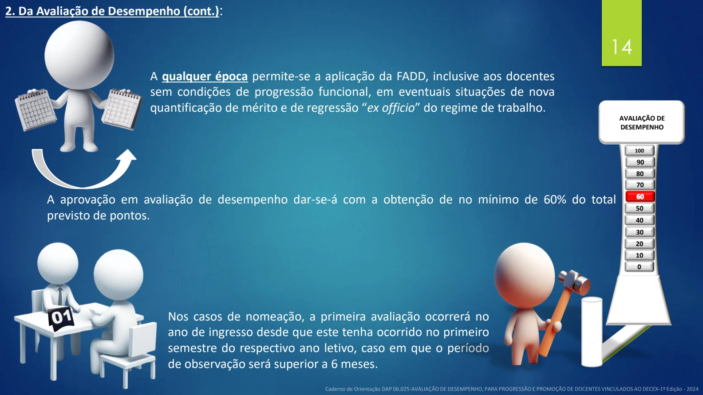
Critérios de avaliação, progressão e promoção
PDF · p. 152. Da Avaliação de Desempenho (cont.):
O docente removido deverá ser avaliado pela
OM onde estiver lotado por mais tempo no
período de avaliação.
O docente redistribuído para o Cmdo Ex deverá ser avaliado, desde que tenha mais de 6 meses
de exercício no respectivo estabelecimento de ensino, no ano letivo da avaliação.
Para fins de avaliação de desempenho de docente em exercício provisório ou
cedido, a OM de lotação deverá solicitar os elementos necessários ao
órgão/entidade no qual o docente se encontra em exercício.
?
6 meses
3 meses
7 meses
Ver página original — tabelas, imagens e diagramas
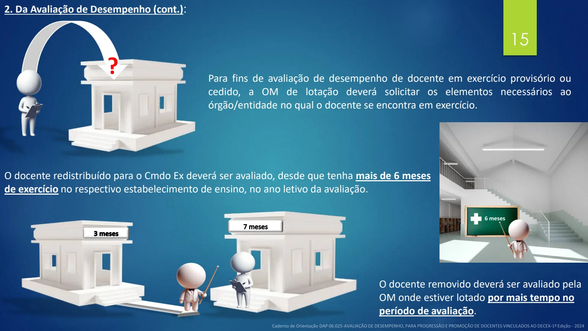
Critérios de avaliação, progressão e promoção
PDF · p. 162. Da Avaliação de Desempenho (cont.):
Em caso de afastamento considerado de efetivo exercício, sem prejuízo da remuneração, no
respectivo ano letivo:
a) por período inferior a 6 meses, o docente deverá ser avaliado;
b) por período superior a 6 meses, o docente receberá pontuação mínima necessária para a
progressão ou a promoção (60 pontos), até que seja processada sua próxima avaliação após
o retorno.
Nos casos de afastamentos sem remuneração, não considerados de efetivo exercício,
iniciado ou findo no respectivo ano letivo, se o período de observação for superior a 6
meses, o docente deverá ser avaliado.
Nesse caso, será considerada para a próxima progressão ou promoção, após o cumprimento
do interstício, a avaliação do ano letivo correspondente ao maior período de observação.
Ver página original — tabelas, imagens e diagramas
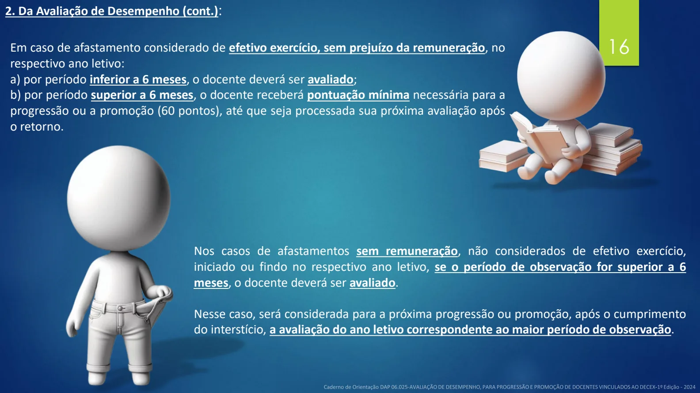
Progressão funcional
PDF · p. 173. Da progressão funcional dos docentes da carreira de Magistério Superior e da carreira de Magistério Do
Ensino Básico, Técnicoe Tecnológico:
A progressão funcional nas Carreiras de Magistério Superior e de Magistério Do Ensino Básico,
Técnico e Tecnológico ocorrerá desde que atendidos, cumulativamente, os seguintes requisitos:
b) aprovação em avaliação de desempenho.
a) o cumprimento do interstício de 24 (vinte e quatro) meses de efetivo exercício em cada nível; e
A vigência da progressão e da promoção é a partir da data do cumprimento dos requisitos.
Ao docente que não lograr aprovação na avaliação de desempenho no respectivo ano letivo
será concedida progressão funcional ou promoção a partir de 1o de janeiro subsequente ao
período em que for aprovado na avaliação.
Ver página original — tabelas, imagens e diagramas
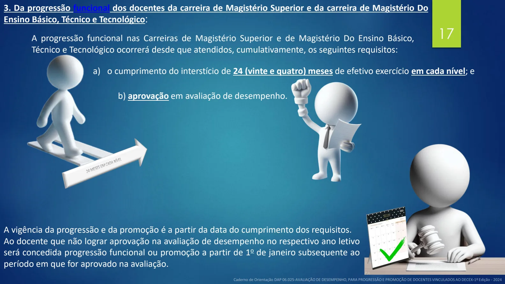
Promoção no Magistério Superior
PDF · p. 18A promoção na Carreira de Magistério Superior
ocorrerá observando-se o interstício mínimo de
24 (vinte e quatro) meses, no último nível de
cada Classe antecedente àquela para a qual dar-
se-á a promoção e, ainda, as seguintes
condições:
E – Professor Titular
• Possuir título de doutor¹
• Ser aprovado em
avaliação de
desempenho²
• Lograr aprovação de
memorial (Anexo B)³
¹ serão considerados apenas os
mestrados e doutorados
reconhecidos pelo Conselho
Nacional de Educação e, se
realizados no exterior, revalidados
por instituição nacional
competente, na forma da lei
D – Professor
Associado
• Possuir título de doutor
• Ser aprovado em
avaliação de
desempenho²
C - Professor
Adjunto Ser aprovado em avaliação de desempenho²
B - Professor
Assistente Ser aprovado em avaliação de desempenho²
A – Professor Adjunto A ou
Assistente A
18
4. Das condições de promoção dos docentes da carreira de Magistério Superior:
E
² (obtenção mínima de 60 (sessenta) pontos na FADD) Tabela 3 – Promoção da Carreira de Magistério Superior
³ obtenção mínima de 60 (sessenta) pontos na avaliação do memorial
Ver página original — tabelas, imagens e diagramas
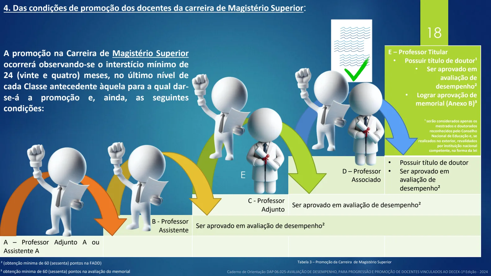
Promoção no Magistério Superior
PDF · p. 194. Das condições de promoção dos docentes da carreira de Magistério Superior (cont.):
O processo de avaliação para acesso à Classe E será realizado pela Comissão
Especial de Avaliação e Promoção à Classe Titular (CAPT), mediante ato formal da
Secretaria das Comissões Especiais de Avaliação e Promoção à Classe Titular
(SeCAPT).
Cada CAPT será composta de 4 (quatro) avaliadores efetivos, sendo 3 (três)
externos e 1 (um) interno. Haverá ainda 1 (um) avaliador interno substituto
para cada CAPT.
Os avaliadores podem repetir-se nesta atividade, seja na condição de
avaliador interno ou externo.
Os avaliadores serão designados mediante convite e aceitação, o que será
consignado em documento.
Ver página original — tabelas, imagens e diagramas
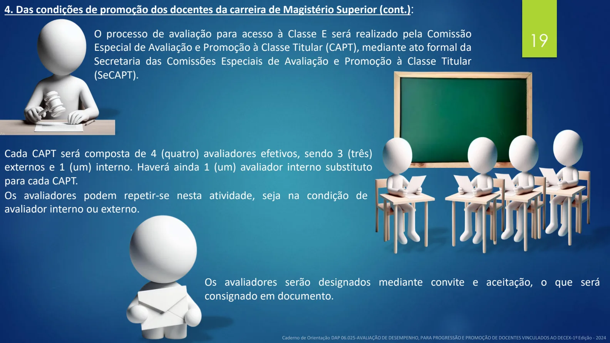
Promoção no Magistério Superior
PDF · p. 204. Das condições de promoção dos docentes da carreira de Magistério Superior (cont.):
Cada avaliador fará a sua análise, gerando 4 (quatro) avaliações, que serão consolidadas,
pelo avaliador interno, em uma ATA.
A promoção à Classe E do Magistério do Ensino Superior (MES), carece
que todo avaliador seja doutor, posicionado na Classe Titular deste
Magistério ou posicionado na Classe D, Nível 4, denominação
Associado, deste Magistério.
As 4 (quatro) avaliações, sejam do memorial descritivo (Anexo B
deste Caderno) ou tese acadêmica inédita, geram uma ATA que
será consolidada pelo avaliador interno, também orientador
desta CAPT.
Ver página original — tabelas, imagens e diagramas
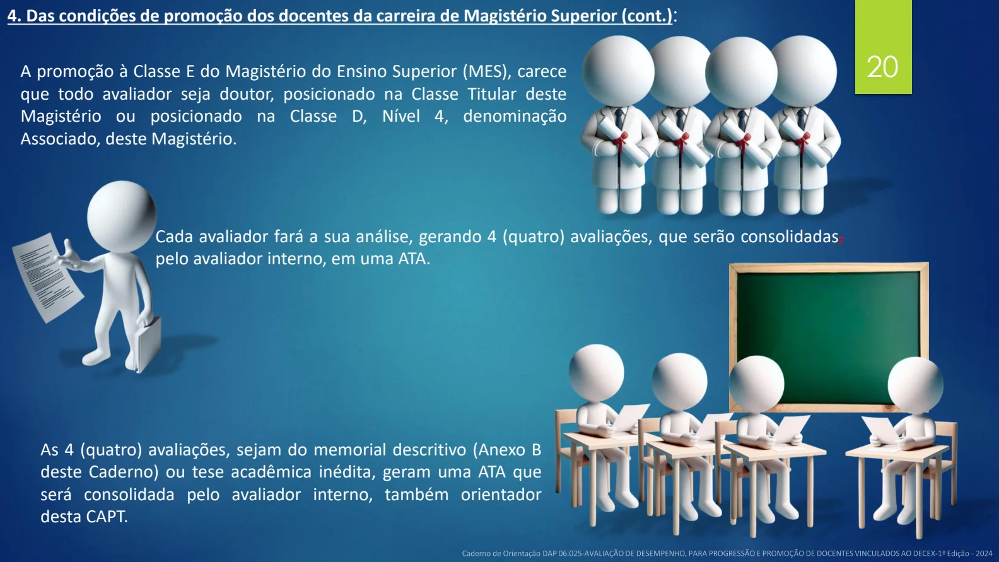
Promoção no Magistério Superior
PDF · p. 214. Das condições de promoção dos docentes da carreira de Magistério Superior (cont.):
No caso de tese acadêmica, poderá ser desenvolvida parte ou aspecto da tese já defendida no
doutorado.
O memorial descritivo deverá considerar as atividades de ensino, pesquisa, extensão, gestão
acadêmica e produção profissional relevante, ou defesa de tese acadêmica inédita.
Vigência da promoção para a classe Titular: a partir do cumprimento dos requisitos, o que ocorrer por
último.
Ver página original — tabelas, imagens e diagramas
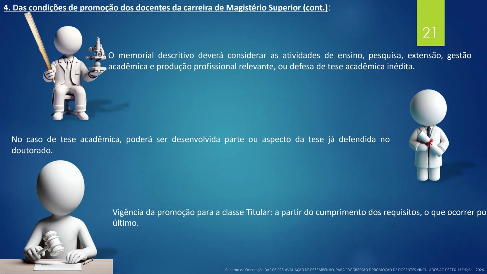
Promoção no Magistério Superior
PDF · p. 224. Das condições de promoção dos docentes da carreira de Magistério Superior (cont.):
Será considerado APTO, o avaliado que obtiver:
ou
no mínimo 3 (três) pareceres de APTO no
memorial descritivo (Anexo B)
tese acadêmica considerada inédita, no
mínimo, por 3 (três) avaliadores
Cada avaliador de memorial descritivo deverá observar a exigência mínima de 60 (sessenta) pontos do total
dos critérios constantes no Anexo B deste Caderno, para emissão do conceito APTO.
MEMORIAL
DESCRITIVO
60
70
80
90
50
40
0
10
20
30
100
Serão considerados apenas os mestrados e doutorados
reconhecidos pelo Conselho Nacional de Educação e, se
realizados no exterior, revalidados por instituição nacional
competente, na forma da lei.
Ver página original — tabelas, imagens e diagramas
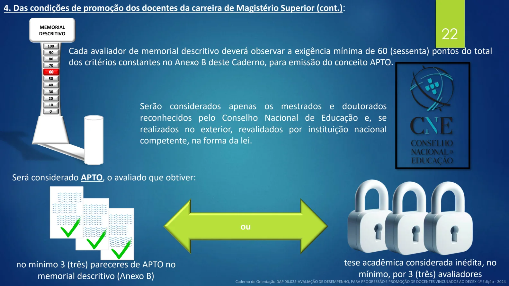
Promoção no EBTT
PDF · p. 23A promoção ocorrerá, observado o interstício
mínimo de 24 (vinte e quatro) meses, no último
nível de cada classe antecedente àquela para a
qual se dará a promoção e, ainda, as seguintes
condições:
Titular
• Possuir título de doutor¹
• Ser aprovado em
avaliação de desempenho
• Lograr aprovação de
memorial descritivo
(Anexo B deste caderno)
ou defesa de tese
acadêmica considerada
inédita.³
¹ serão considerados apenas os
mestrados e doutorados
reconhecidos pelo Conselho
Nacional de Educação e, se
realizados no exterior, revalidados
por instituição nacional
competente, na forma dalei.
D IV
Ser aprovado em
avaliação de
desempenho
D III Ser aprovado em avaliação de desempenho
D II Ser aprovado em avaliação de desempenho
D I
23
5. Das condições de promoção dos docentes da carreira de Magistério do Ensino Básico, Técnico e
Tecnológico- EBTT:
E
²(obtenção mínima de 60 (sessenta) pontos na FADD)
Tabela 4 – Promoção da Carreira de Magistério do
Ensino Básico, Técnico e Tecnológico
³ obtenção mínima de 60 (sessenta) pontos na avaliação do memorial
Ver página original — tabelas, imagens e diagramas
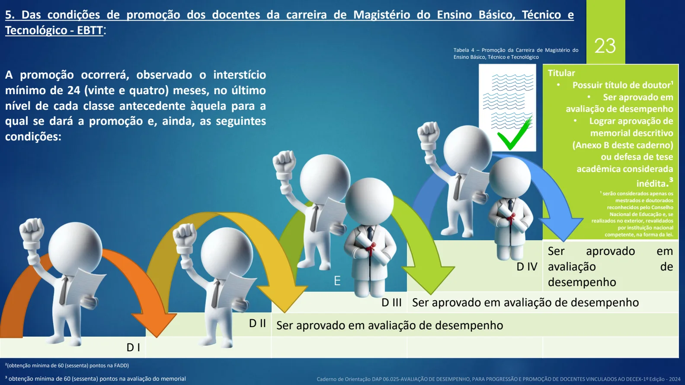
Promoção no EBTT
PDF · p. 2424A promoção à classe Titular do Magistério do Ensino Básico, Técnico e
Tecnológico (MEBTT) carece que todo avaliador seja doutor, Classe Titular ou
posicionado na Classe D IV, Nível 4, deste Magistério.
5. Das condições de promoção dos docentes da carreira de Magistério do Ensino Básico, Técnico e
Tecnológico – EBTT (cont.):
Com exceção das diferenças estabelecidas entre as Tabelas 3 e 4
deste caderno, as demais condições de promoção dos docentes da
carreira de magistério do EBTT seguem as mesmas orientações da
promoção dos docentes do magistério superior.
Vigência da promoção pata a classe Titular: a partir do cumprimento dos requisitos, o
que ocorrer por último.
Ver página original — tabelas, imagens e diagramas
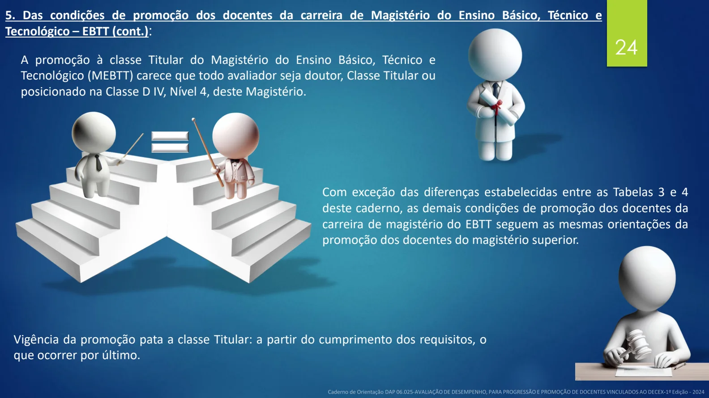
Aceleração da promoção
PDF · p. 25C - Professor
Adjunto
Nível 1
pela apresentação do título de doutor.
B - Professor
Assistente
Nível 1
pela apresentação do grau de mestre.
A – Professor Adjunto A ou
Assistente A
25
6. Da aceleração dos docentes da carreira de Magistério Superior:
Tabela 5 – Aceleração da Promoção da Carreira de Magistério Superior
Farão jus à aceleração da promoção os docentes que, aprovados no estágio probatório do respectivo
cargo, atenderem aos seguintes requisitos de titulação:
Aos docentes que já ocupavam cargo efetivo em 1º de março de 2013, ainda que se encontrassem em estágio probatório, é
permitida a aceleração da promoção.
Para aqueles que não se enquadram na situação supramencionada, a aceleração da promoção somente produzirá efeitos a partir
da efetivação da estabilidade.
A aceleração da promoção deverá ser solicitada pelo docente, conforme regulamentação dos órgãos gestores das linhas de
ensino militar, no âmbito do Comando do Exército, o qual produzirá efeitos a partir da data em que for protocolado o
requerimento.
Ver página original — tabelas, imagens e diagramas
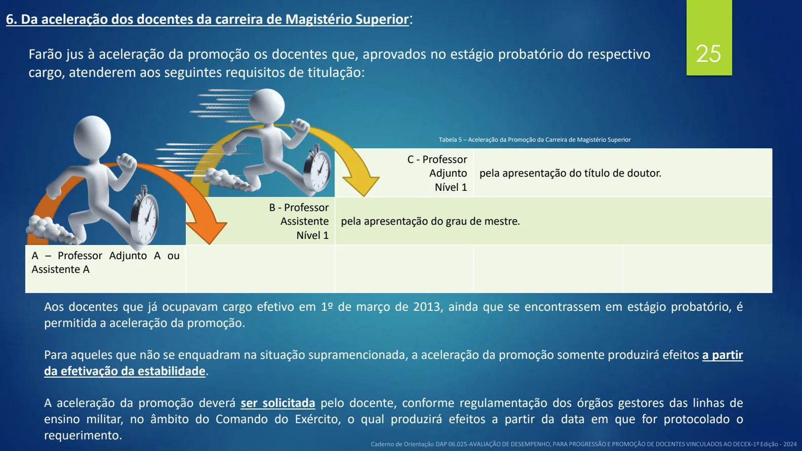
Aceleração da promoção
PDF · p. 266. Da aceleração dos docentes da carreira de Magistério do EBTT:
Farão jus à aceleração da promoção os docentes que, aprovados no estágio probatório do respectivo cargo, atenderem aos
seguintes requisitos de titulação:
De qualquer nível da Classe D I
para o Nível 1 da Classe D II
Classe DI
Nível 2
Nível 1
Classe D II
Nível 1
pela apresentação de
título de especialista
Ver página original — tabelas, imagens e diagramas
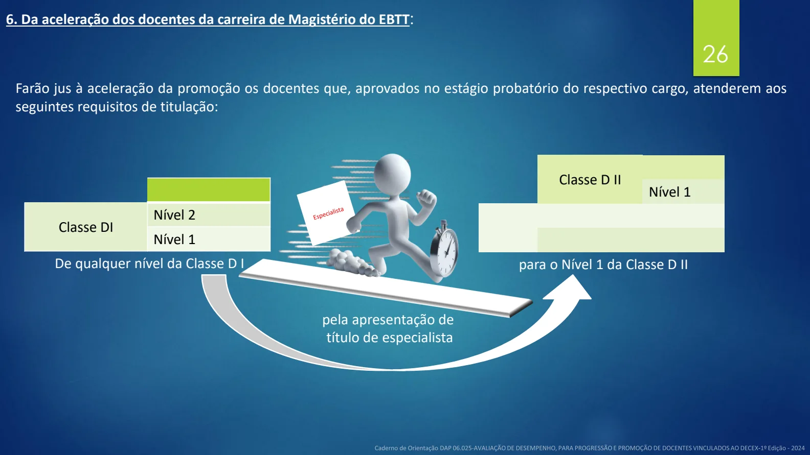
Aceleração da promoção
PDF · p. 276. Da aceleração dos docentes da carreira de Magistério do EBTT (cont.):
De qualquer nível das
Classes D I e D II
para o Nível 1 da Classe D III
Classe D III
Nível 1
pela apresentação de
título de mestre ou doutor
Classe D II Nível 2
Nível 1
Classe D I Nível 2
Nível 1
Aos docentes que já ocupavam cargo efetivo em 1º de março de 2013, ainda que se encontrassem em estágio probatório, é
permitida a aceleração da promoção.
Para aqueles que não se enquadram na situação supramencionada, a aceleração da promoção somente produzirá efeitos a
partir da efetivação da estabilidade.
A aceleração da promoção deverá ser solicitada pelo docente, conforme regulamentação dos órgãos gestores das linhas de
ensino militar, no âmbito do Comando do Exército, o qual produzirá efeitos a partir da data em que for protocolado o
requerimento.
Ver página original — tabelas, imagens e diagramas
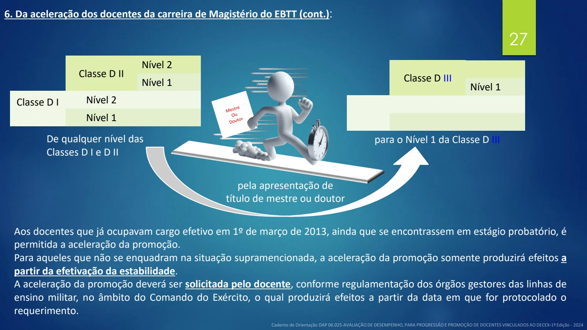
Documentos necessários
PDF · p. 28Esta página contém conteúdo gráfico. Consulte a reprodução original abaixo.
Ver página original — tabelas, imagens e diagramas
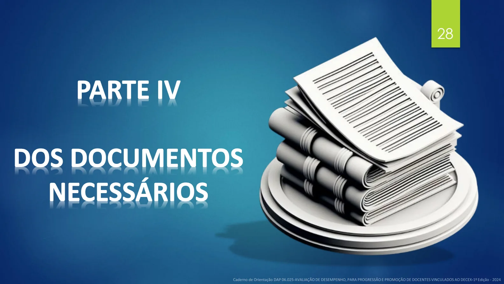
Documentos necessários
PDF · p. 291. REDIGINDO OS DOCUMENTOS NO SPED (Requerimento)
1
2
3
Requerimento
4
Ver página original — tabelas, imagens e diagramas
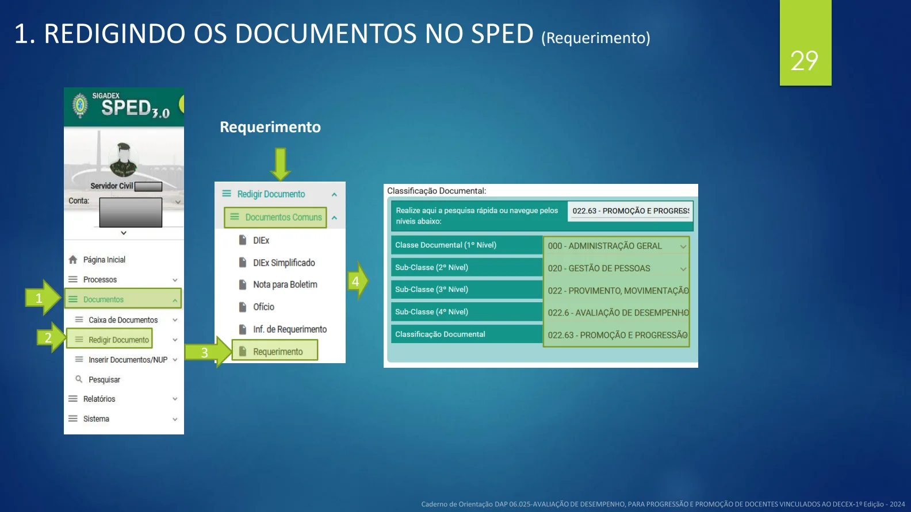
Documentos necessários
PDF · p. 30DOCUMENTO RESPONSÁVEL PELO
FORNECIMENTO OBSERVAÇÕES
Requerimento Interessado
No SPED 3.0, conforme item 1 da
Parte IV – Documentos Necessários
deste caderno.
Certificado de titulação Interessado -
Termo de Aceite e de Responsabilidade do
Avaliador Membro CAPT
Conforme Anexo C da Portaria nº
214/DECEx, de 20 de dezembro de
2016
Avaliação de Memorial Descritivo para Promoção a
Titular do Magistério o Ensino Superior (Resultado) Membro CAPT
Conforme Anexo E da Portaria nº
214/DECEx, de 20 de dezembro de
2016
Memorial descritivo ou tese acadêmica inédita Interessado Anexo B (para o memorial)
Portaria de designação da CAPT OM -
FADD Chefia Imediata e
Comissão Anexo A
Ata de Consolidação dos Pareceres de Avaliação
para Promoção à Classe E, Titular, do Magistério do
Ensino Superior
CAPT
Conforme Anexo I da Portaria nº
214/DECEx, de 20 de dezembro de
2016
Documentação atinente à análise do doutorado
pela COPEMA/EE (Ata ou BI com publicação) OM -
2. PARA A PROMOÇÃO PARA A CLASSE DE PROFESSOR
TITULAR DO MAGISTÉRIO SUPERIOR E DO EBTT:
Ver página original — tabelas, imagens e diagramas
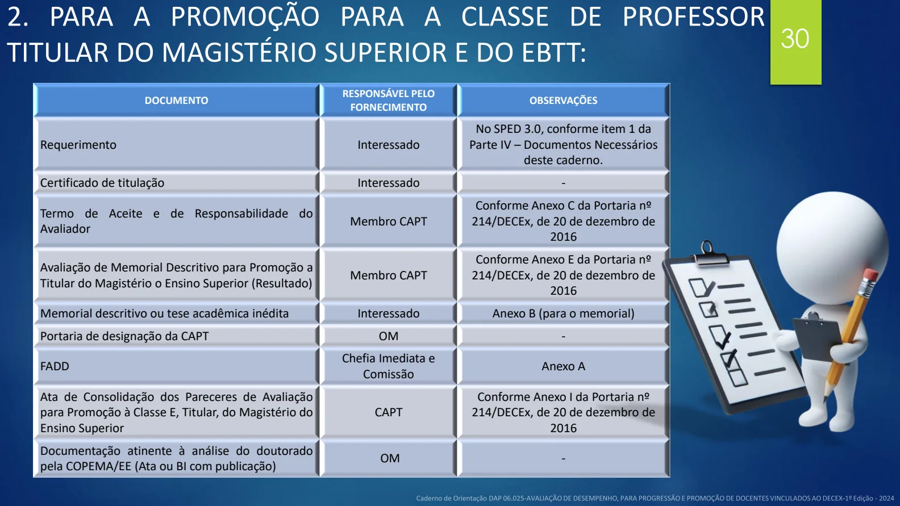
Documentos necessários
PDF · p. 31DOCUMENTO RESPONSÁVEL PELO
FORNECIMENTO OBSERVAÇÕES
Requerimento Interessado
No SPED 3.0, conforme item 1 da
Parte IV – Documentos Necessários
deste caderno.
Certificado de titulação Interessado -
Documentação atinente à análise do doutorado
pela COPEMA/EE (Ata ou BI com publicação) OM -
3. PARA A ACELERAÇÃO DA PROMOÇÃO PARA A CLASSE
TITULAR DO MAGISTÉRIO SUPERIOR E DO EBTT:
Ver página original — tabelas, imagens e diagramas
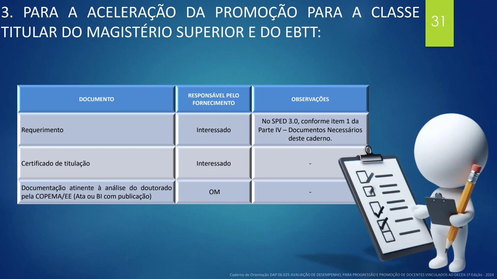
Fontes e elaboração
PDF · p. 32ELABORAÇÃO:
ASSESSORIA TÉCNICA DA SPC/DAP
SUBSEÇÃO DE CARREIRA DA SPC/DAP
OUTUBRO DE 2024
Para conhecer melhor o assunto, leia as
legislações indicadas no início deste caderno, disponíveis no link:
https://legis.sigepe.gov.br/legis/pesquisa-avancada
Ver página original — tabelas, imagens e diagramas
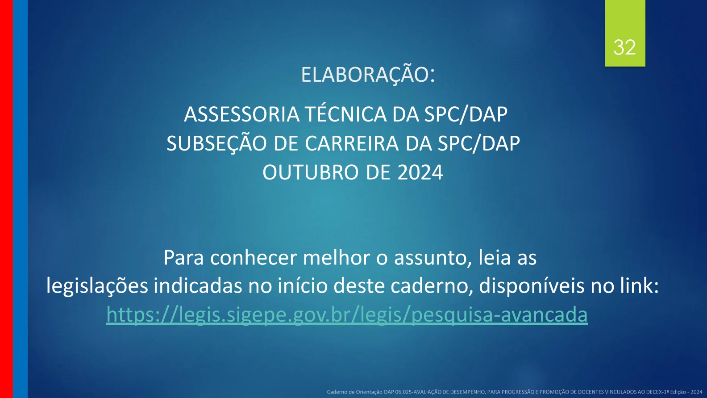
Anexo A — FADD
PDF · p. 33ANEXOS
ANEXO A
Ficha de Avaliação do Desempenho de Docente - FADD
MINISTÉRIO DA DEFESA
EXÉRCITO BRASILEIRO
(escalões hierárquicos até a OM expedidora)
(Denominação histórica)
FICHA DE AVALIAÇÃO DO DESEMPENHO DE DOCENTE – FADD
Nome do docente: ___________________________________________________
Carreira: ___________________________________________________________
Matrícula SIAPE: ________________________CPF: ________________________
OM: ______________________________________________________________
Período de Avaliação
De____/____/_____
A____/____/______
1. FATOR DE PRODUÇÃO
- Desenvolvimento satisfatório de suas atividades docentes.
- Publicação de artigos em revistas especializadas, relatório de congressos e participação regular nessas
atividades.
- Orientação de teses, dissertações, monografias e projetos de fim de curso.
- Orientação à iniciação científica, tecnológica, cultural, artística e atlética.
- Elaboração de relatórios técnicos e participação da revisão curricular e na elaboração de projetos.
6 Pontos 8 Pontos 10 Pontos 12 Pontos 14 Pontos 16 Pontos 18 Pontos 20 Pontos
2. FATOR DE APERFEIÇOAMENTO
- Participação em grupos de pesquisa em sua área de atuação.
- Participação regular em debates sobre assuntos relacionados à sua área de pesquisa.
- Participação em bancas de exame de graduação e pós-graduação lato sensu e stricto sensu.
- Participação em corpo editorial, comissões científicas e/ou da organização de eventos científicos.
- Atualização e integração de conhecimentos em sua área de concentração de estudos.
6 Pontos 8 Pontos 10 Pontos 12 Pontos 14 Pontos 16 Pontos 18 Pontos 20 Pontos
3. FATOR FUNCIONAL
- Assiduidade e pontualidade aos atos de serviço, comemorativos e compromissados.
- Disciplina intelectual nos trabalhos em grupo e na exposição e defesa de idéias e direitos.
- Melhoria continuada no cumprimento de suas atribuições.
- Lealdade à instituição e nas relações de trabalho.
6 Pontos 8 Pontos 10 Pontos 12 Pontos 14 Pontos 16 Pontos 18 Pontos 20 Pontos
Ver página original — tabelas, imagens e diagramas
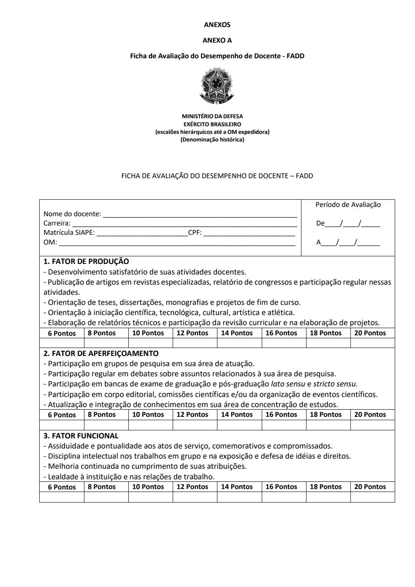
Anexo A — FADD
PDF · p. 344. FATOR DE DESENVOLVIMENTO
- Iniciativa para agir em benefício do serviço.
- Cooperação e participação espontâneas nos eventos de serviço.
- Capacidade de assumir compromissos.
- Motivação para os atos de rotina e aceitação do inédito.
- Participação das atividades de extensão e serviços comunitários.
6 Pontos 8 Pontos 10 Pontos 12 Pontos 14 Pontos 16 Pontos 18 Pontos 20 Pontos
5. FATOR SOCIAL
- Facilidade de comunicação com pessoas e grupos sociais.
- Manutenção do equilíbrio emocional, mesmo na adversidade.
- Polidez no trato social e funcional.
- Moralidade e ética nas ações e relacionamentos.
- Capacidade de aglutinar discentes e docentes.
6 Pontos 8 Pontos 10 Pontos 12 Pontos 14 Pontos 16 Pontos 18 Pontos 20 Pontos
6.Somatório dos pontos
atribuídos ao docente (numeral
e por extenso)
Em _____/_____/_____
__________________________
Diretor de Ensino
Em _____/_____/_____
___________________________________
Docente
OBS:
1) Para cada Fator:
- atribuir pontos pelo conjunto de itens listados e que sejam pertinentes à carreira;
- grafar os pontos atribuídos em numeral e por extenso na janela pertinente; e
- anular as janelas dos demais pontos.
2) O somatório será grafado em numeral e por extenso.
3) Mínimo de 60 pontos para aprovação para obtenção da progressão funcional ou promoção.
Ver página original — tabelas, imagens e diagramas
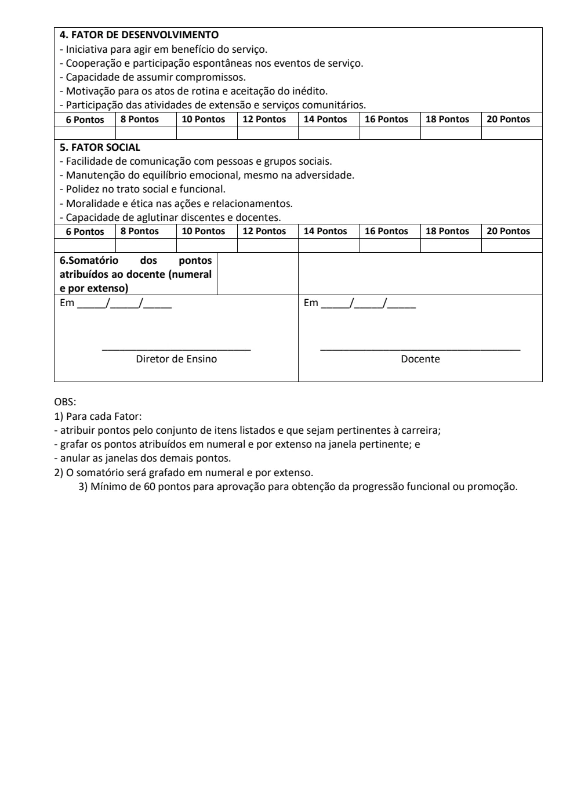
Anexo B — memorial descritivo
PDF · p. 35ANEXO B
Memorial Descritivo para Avaliação de Professor Doutor do
Magistério Superior e Magistério do Ensino Básico, Técnico e Tecnológico
MINISTÉRIO DA DEFESA
EXÉRCITO BRASILEIRO
(escalões hierárquicos até a OM expedidora)
(Denominação histórica)
MEMORIAL DESCRITIVO PARA AVALIAÇÃO DE PROFESSOR DOUTOR DO
MAGISTÉRIO SUPERIOR E MAGISTÉRIO DO ENSINO BÁSICO, TÉCNICO E TECNOLÓGICO
I - Atividade de ensino e orientação.
Nº
Ordem Atividade Unidade Fator de
Pontuação
Pontuação
máxima da
Atividade
1 Atividade de ensino no EBTT, EBM ou equivalente. Ano 1
30
2 Atuação docente em EAD. Ano 1
3 Atividade de ensino na graduação. Semestre 1
4 Atividade de ensino na pós-graduação. Semestre 1,5
5 Participação em projetos ou programas
governamentais (UAB,PRONATEC,etc). Semestre 1
6 Participação em concursos ou competições como
orientador de alunos. Evento 1
7 Orientação de bolsistas de monitoria, de pesquisa
ou de extensão. Por bolsista 1
8 Orientação e/ou supervisão de estágio curricular. Por orientação 1
9 Orientação de TCC em cursos de graduação. Por orientação 1
10 Orientação de dissertação de mestrado. Por orientação 2
11 Orientação de tese de doutorado. Por orientação 3
12 Orientação de grêmios escolares. Semestre 1
13 Orientação de grupos artísticos, sociais,
esportivos, religiosos, filantrópicos e/ou similares. Semestre 1
14 Orientação de estudo extracurricular para cada
conteúdo programático. Semestre 1
15 Orientação para as diferentes olimpíadas
escolares do conhecimento. Semestre 1
16 Orientação e/ou treinamento de equipes
esportivas para competições externas. Semestre 1
17 Acompanhamento de alunos em visitas técnicas
e/ou viagem de estudos. Evento 1
18 Palestras ministradas. Evento 0,5
19 Práticas de ensino realizadas por meio de oficinas,
minicursos, ateliês e workshops. Evento 1
20 Atividade de capacitação de docentes e de outros
profissionais. Evento 2
Ver página original — tabelas, imagens e diagramas
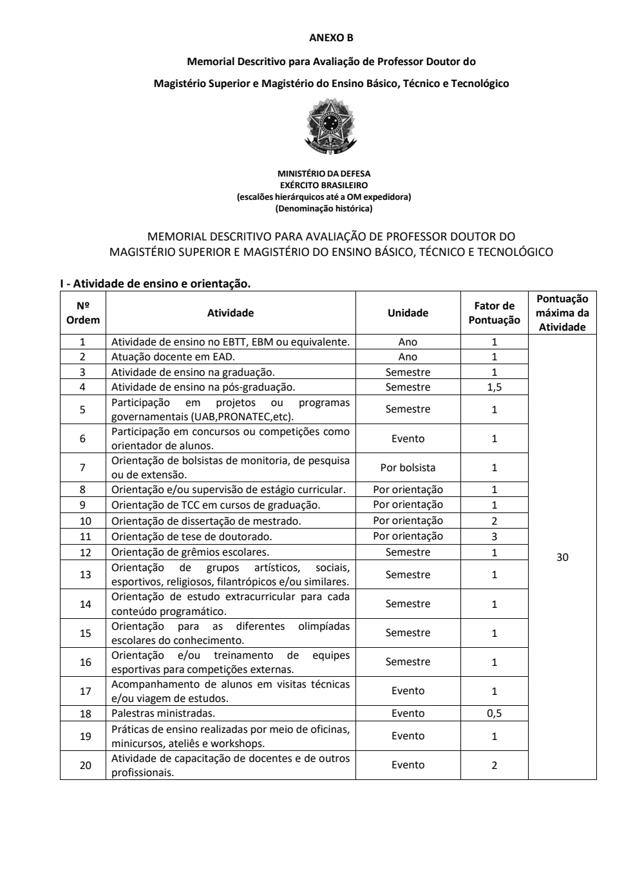
Anexo B — memorial descritivo
PDF · p. 36II - Atividade de pesquisa, desenvolvimento tecnológico e inovação.
Nº
Ordem Atividade Unidade Fator de
Pontuação
Pontuação
máxima da
Atividade
21 Publicação de livro. Livro 2
15
22 Organização de livro. Livro 1
23 Publicação de capitulo de livro. Capítulo 1
24 Publicações de artigos em periódico acadêmico
indexado. Artigo 2
25 Publicações de artigos em periódico acadêmico
indexado ou não. Artigo 1
26 Publicações de trabalhos técnicos de pesquisa. Trabalho 1
27 Publicações de conteúdo educacional em sítios da
internet. Publicação 1
28 Coordenação ou participação em grupos de
pesquisa. Semestre 0,5
29 Participação em consultorias especializadas. Consultoria 1
30 Produção de material didático. Produto 2
31 Tradução ou revisão artigo, publicação ou livro. Livro 1
32
Participação com comunica ção oral ou pôsteres
em eventos científicos, culturais ou esp ortivos
(encontros, seminários, simpósios, workshops,
mostras, p alestras e conferências, feiras
científicas, competições entres discentes).
Evento 2
33 Trabalhos completos publicados em anais de
eventos. Publicação 0,5
34 Poster apresentado em evento e/ ou resumo
publicado em anais de eventos. Publicação 0,5
35 Elaboração de relatório, projeto ou manual
interno. Produto 0,5
36
Produção artística demonstrada publicamente em
cinema, música, dança, artes plásticas, design,
artes cênicas, fotografia e afins.
Produção 0,5
37
Reconhecimento de atividade e /ou produção
acadêmica por meio de prêmios e/ou
condecorações.
Atividade ou
Produto 1
III - Atividade de Extensão.
Nº
Ordem Atividade Unidade Fator de
Pontuação
Pontuação
máxima da
Atividade
38 Coordenação de programas, projetos, cursos ou
ações de extensão. Evento 1
2
39 Participação ou colaboração em progr amas,
projetos, cursos ou ações de extensão. Evento 1
40
Coordenação de programas, projet os, cursos ou
ações de extensão em parceria com outras
instituições.
Evento 1
41
Participação ou colaboração em progr amas,
projetos, cursos ou ações de extensão em parceria
com outras instituições.
Evento 1
42
Participação ou colaboração em ativida de de
assistência, capacitação, assessoria e/ou
representação junto à outras instituições.
Evento 1
Ver página original — tabelas, imagens e diagramas
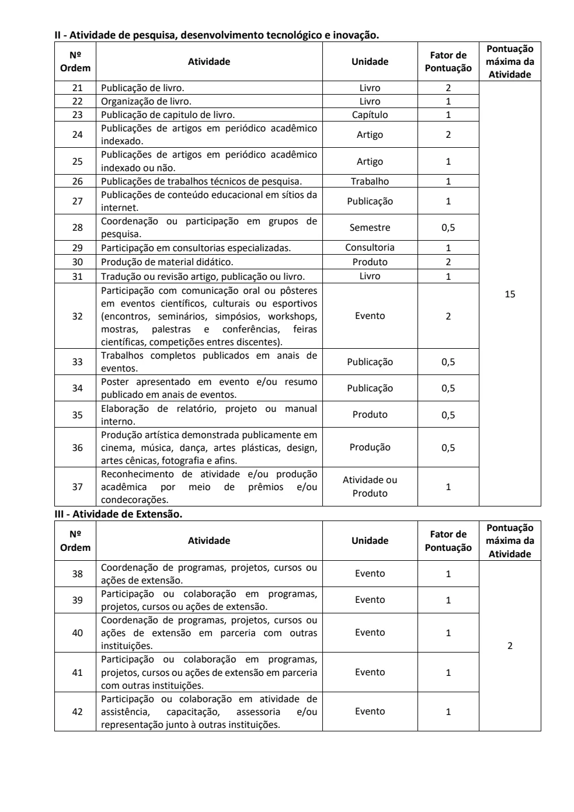
Anexo B — memorial descritivo
PDF · p. 37IV - Participação em bancas de avaliação.
Nº
Ordem Atividade Unidade Fator de
Pontuação
Pontuação
máxima da
Atividade
43 Participação em bancas de graduação. Banca 1
8
44 Participação em bancas de qualificação de
mestrado. Banca 2
45 Participação em bancas de mestrado. Banca 2
46 Participação em bancas de qualificação de
doutorado. Banca 3
47 Participação em bancas de doutorado. Banca 3
48 Participação em bancas de seleção de docentes. Banca 2
49 Participação em equipes de avaliação de trabalhos
para eventos. Evento 1
50 Participação como avaliador de per iódicos para
revistas ou outros periódicos científicos. Periódico 2
51 Participação em elaboração de provas e exames de
seleção. Evento 2
52 Participação em bancas de seleção de discentes
para composição de grupos de trabalho/pesquisa. Evento 1
53 Participação em banca de avaliação de fei ra de
arte, cultura, ciências e afins. Evento 1
54 Participação em diferentes processos seletivos de
interesse institucional. Evento 2
55 Participação em comissão de conc urso público
para provimento de cargo ou função pública. Evento 2
V - Participação como editor/revisor.
Nº
Ordem Atividade Unidade Fator de
Pontuação
Pontuação
máxima da
Atividade
56 Participação como editor ou revisor de materiais
didáticos, apostila e/ou artigos. Produto 2
4
57 Participação como editor ou revisor de revista
e/ou outros periódicos científicos. Produto 2
58 Participação como editor ou revisor de livros. Produto 2
59
Participação como editor ou revisor de
documentos escolares, revistas escolares e/ou
equivalentes.
Produto 2
VI - Participação como membro de comissões de caráter pedagógico.
Nº
Ordem Atividade Unidade Fator de
Pontuação
Pontuação
máxima da
Atividade
60 Participação como m embro de Comissão
Permanente de Magistério - COPEMA. Semestre 1
2
61 Participação como membro de outras comissões
de caráter pedagógico permanente. Semestre 1
62 Participação como membro de Conselho de
Ensino. Evento 1
63 Participação como membro de comi ssão para
revisão curricular de disciplina. Evento 1
64 Participação como membro de outras comissões
de caráter pedagógico transitória. Evento 1
Ver página original — tabelas, imagens e diagramas
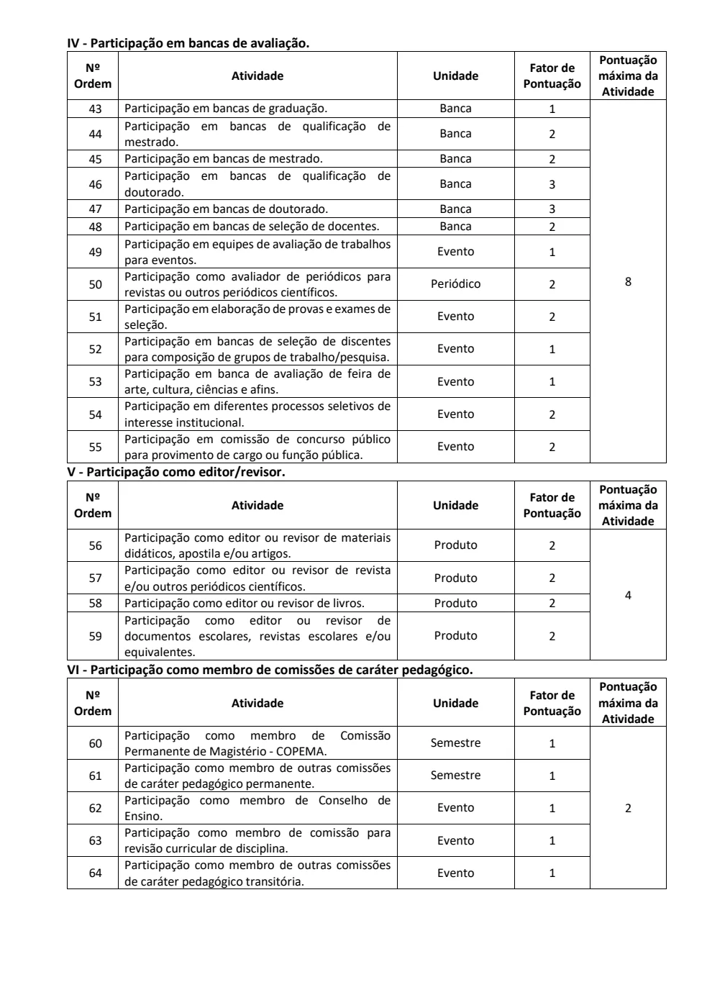
Anexo B — memorial descritivo
PDF · p. 38VII - Participação como membro de comissão de elaboração de Projeto Pedagógico de novos cursos.
Nº
Ordem Atividade Unidade Fator de
Pontuação
Pontuação
máxima da
Atividade
65
Participação como membro de com issões de
elaboração de Projeto Pedagógico de Cursos
Técnicos.
Projeto 1
2 66
Participação como membro de com issões de
elaboração de Projeto Pedagógico de Cursos de
Graduação.
Projeto 1
67
Participação como membro de com issões de
elaboração de Projeto Pedagógico de Cursos de
Pós-Graduação.
Projeto 1
VIII - Participação na organização de congressos, workshops, s eminários, mostras, palestras e
conferências, prêmios em concursos e competições como orientador de alunos.
Nº
Ordem Atividade Unidade Fator de
Pontuação
Pontuação
máxima da
Atividade
68
Participação na organização de eventos científicos,
culturais ou esportivos (encontros, seminários,
simpósios, workshops, mostras, palestras e
conferências, feiras científicas, competições entre
discentes).
Evento 2
4
69
Participação em comitê cientí fico de ev entos
científicos, culturais ou esportivos (encontros,
seminários, simpósios, workshops, mostras,
palestras e conferências, feiras científicas,
competições entre discentes).
Evento 2
70 Participação como avaliador de eventos de
iniciação científica, feira de ciências e similares. Evento 2
71 Participação em eventos/atividades desportivas e
culturais. Evento 2
72 Participação da organiza ção da apresentação de
Trabalho Interdisciplinar. Evento 2
73 Participação na organização de feira, exposição ou
mostra de sua disciplina. Evento 2
74 Participação da organização direta ou indireta de
olimpíadas escolares. Evento 2
75
Participação da organização de eventos científicos,
comemorativos ou assistenciais, de natureza
social, cultural, esportivo ou correlatos.
Evento 2
IX - Participação como membro de comissões ou grupos de trabalho de caráter provisório.
Nº
Ordem Atividade Unidade Fator de
Pontuação
Pontuação
máxima da
Atividade
76
Participação em grupo de trabal ho de Estagio
Supervisionado de Atualização pedagógica (ESTAP,
ESTAPAE e outros).
Evento 0,5
8 77
Participação em grupo de trabalho para estudo e
implantação de competências, habilidades e
descritores de disciplina.
Evento 1
78
Participação como membro de grupo de trabalho
para elaboração de projeto para o Trabalho
Interdisciplinar.
Evento 0,5
Ver página original — tabelas, imagens e diagramas
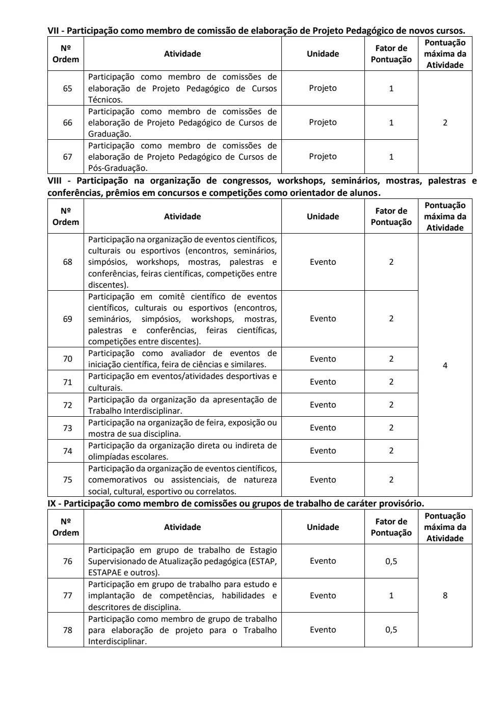
Anexo B — memorial descritivo
PDF · p. 3979 Participação como membro da comissã o para
revisão dos critérios de avaliação de RSC. Evento 1
8
80
Participação como membro da comissão para
revisão das atividades do memorial para a
promoção à professor titular.
Evento 1
81
Participação como membro de grupo de trabalho
para estudos pertinentes à implantação da
inclusão escolar.
Evento 1
82 Participação como membro de outras comis sões
ou grupos de trabalho de caráter provisório. Evento 0,5
X - Exercício de cargos de direção e de coordenação.
Nº
Ordem Atividade Unidade Fator de
Pontuação
Pontuação
máxima da
Atividade
83 Atuação como coordenador de disciplina/ano. Semestre 1
10
84 Atuação como coordenador-geral de disciplina. Semestre 1
85 Atuação como adjunto do coordenador-geral de
disciplina. Semestre 1
86 Atuação como assessor da seção de ensino. Semestre 1
87 Atuação como assessor da divisão de ensino. Semestre 1
88 Atuação como coordenador de série ou ano
ensino. Semestre 1,5
89
Atuação como coordenador/chefe de grupos de
trabalho ou comissões que desenvolvam
atividades pedagógicas e/ou administrativas.
Semestre 3
90 Atuação como Coordenador de laboratórios. Semestre 1
91
Atuação na gestão escolar pedagógica (supervisão,
coordenação, orientação educacional, inspeção
escolar e/ou similares).
Semestre 1
92
Coordenação de equipe, clube, oficina e
ambientes de aprendizagem ou execução de
outras atividades que resultem em funções
gratificadas.
Semestre 1
93
Exercício de direção, assessoramento e assistência
na própria instituição, nos diversos níveis e
modalidades de educação.
Semestre 1
XI - Aperfeiçoamento.
Nº
Ordem Atividade Unidade Fator de
Pontuação
Pontuação
máxima da
Atividade
94 Outro doutorado além do básico requisitado para
esta progressão. Curso 5
12
95 Conclusão de estágio de Pós-doutorado. Curso 5
96
Conclusão de pós -graduação além do
doutoramento básico requisitado para esta
progressão.
Curso 5
97
Participação como ouvinte em eventos científicos,
culturais ou esportivos (encontros, seminários,
simpósios, worksho ps, mostras, palestras e
conferências, feiras científicas, competições entre
discentes).
Evento 1
98 Cursos concluídos de até 9 (nove) horas-aula. Curso 1
99 Cursos concluídos de até 10 (dez) a 119 (cento e
dezenove) horas-aula. Curso 2
Ver página original — tabelas, imagens e diagramas
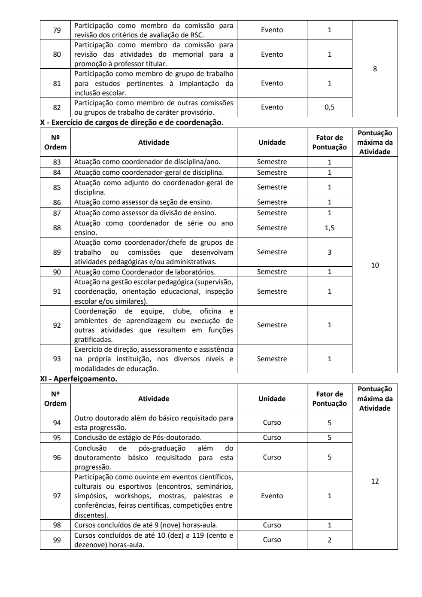
Anexo B — memorial descritivo
PDF · p. 40100 Cursos concluídos de mais de 120 (cento e vinte)
horas-aula. Curso 3
12
101 Outra graduação, além da originária, obtida em
qualquer época. Curso 3
102 Outra habilitação em curso de graduação, além da
originária, obtida em qualquer época. Habilitação 3
103
Domínio em idioma estrangeiro comprovado por
certificado ou por aprovação em prova de idioma
estrangeiro de concurso de admissão ao mestrado
e/ou doutorado.
Idioma 1
XII - Representação em: conselho, câmaras, comitês, de caráter permanente, sindical.
Nº
Ordem Atividade Unidade Fator de
Pontuação
Pontuação
máxima da
Atividade
104 Representação ou participação em
conselhos/colegiado. Semestre 1
3
105 Representação ou participação como membros de
gestão sindical, conselhos de classe e profissionais. Semestre 1
106
Participação como tit ular ou suplente em
comissão ou representações permanentes
internas ou externas.
Semestre 1
107
Participação como tit ular ou suplente em
comissão ou representações temporárias internas
ou externas: por exemplo processos
administrativos, sindicâncias e outros.
Evento 1
Pontuação máxima em cada atividade.
I - Atividade de ensino e orientação. 30
II - Atividade de pesquisa, desenvolvimento tecnológico e inovação. 15
III - Atividade de Extensão. 2
IV - Participação em bancas de avaliação. 8
V - Participação como editor/revisor. 4
VI - Participação como membro de comissões de caráter pedagógico. 2
VII - Participação como membro de comissão de elaboração de Projeto Pedagógico de novos
cursos.
2
VIII - Participação na organização de congressos, workshops, seminários, mostras, palestras
e conferências, prêmios em concursos e competições como orientador de alunos.
4
IX - Participação como membro de comissões ou grupos de trabalho de caráter provisório. 8
X - Exercício de cargos de direção e de coordenação. 10
XI - Aperfeiçoamento. 12
XII - Representação em: conselho, câmaras, comitês, de caráter permanente, sindical. 3
Ver página original — tabelas, imagens e diagramas
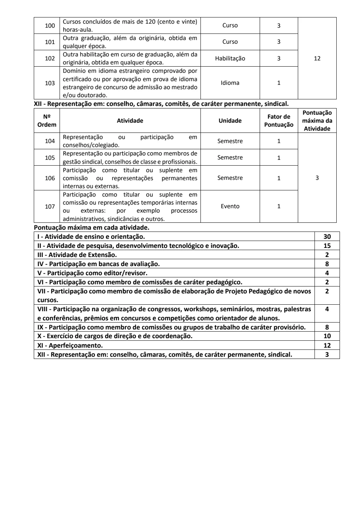